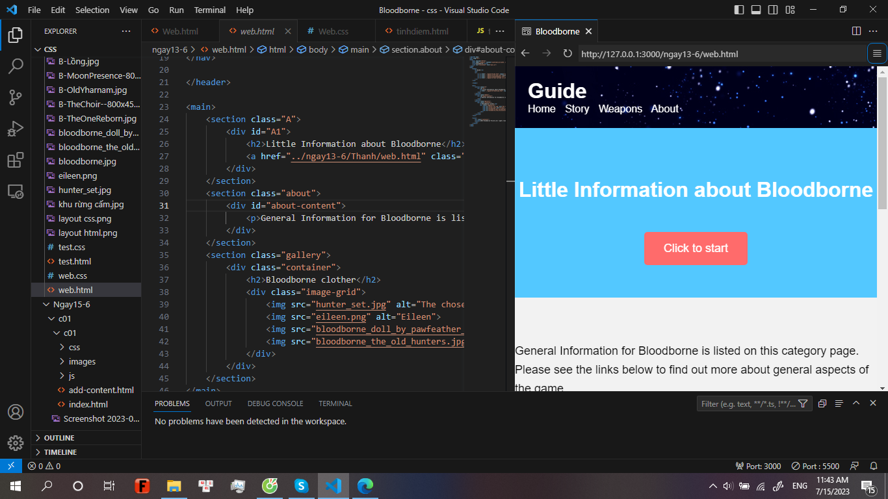

Every thing about me
Batman Beyond (known as Batman of the Future outside the United States) is an American superhero animated television series based on the DC Comics superhero Batman. Created and developed by Paul Dini, Bruce Timm, and Alan Burnett and produced by Warner Bros. Animation,[1] the series began airing on January 10, 1999 on Kids' WB, and ended on December 18, 2001. In the United Kingdom, it began airing on September 4, 2000.[2] After 52 episodes spanning three seasons and one direct-to-video feature film, the series was brought to an end in favor of the Justice League animated series, and plans for a fourth season were cancelled.[3] Depicting a teenaged Batman (Terry McGinnis) in a futuristic Gotham City under the tutelage of an elderly Bruce Wayne, Batman Beyond is chronologically the final series of the DC Animated Universe, and serves as the sequel to both Batman: The Animated Series and The New Batman Adventures.[4]


Project 1
Terrence "Terry" McGinnis Wayne adopted the identity of Batman in the future following Bruce Wayne's retirement from the role. Like his predecessor and mentor, he fought crime and injustice in Gotham City and elsewhere for many years.
Project 2
During her encounters with the Justice League, Amanda Waller particularly developed an admiration for Batman and came to believe that someone like the Dark Knight would always be needed. While watching Batman age, Waller realized he wouldn't be around forever and the Dark Knight would either have to retire or be killed at some point.